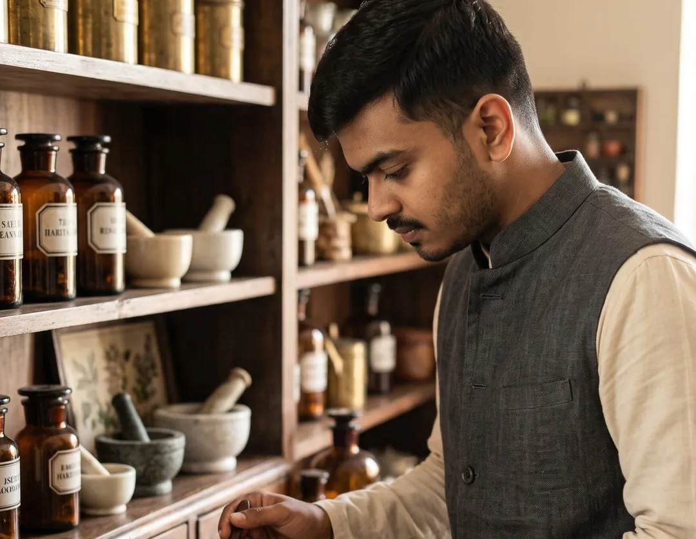

Pinda Sweda / Kizhi in Patna

If you have ever seen two therapists working in rhythm, tapping and rubbing small cloth bundles over a patient, pausing only to dip the bundles back into a pan of warm oil, you have seen kizhi. It is one of the most recognisable Kerala therapies and one of the most labour-intensive. Behind that rhythm is a classical idea that heat and medicine can be delivered together, in a form the hand can control.
Names and meaning
Pinda (पिण्ड) means a ball or bolus, and sweda (स्वेद) means sweat. Pinda sweda is sweating induced by heated boluses. The Malayalam word kizhi refers to the cloth bundle itself. Classical texts call this broad group sankara sweda, where heat is applied through materials wrapped in cloth.
From Charaka to Kerala
The Charaka Samhita places sankara sweda first among the thirteen fire-based forms of sweating in the Swedadhyaya chapter. It describes boluses filled with grains, pulses, meat, leaves, dung and other materials, either with oil (snigdha) or dry (ruksha). The Sushruta Samhita and Ashtanga Hridaya also describe bolus fomentation.
The named varieties used today grew mainly in Kerala's Ayurvedic tradition over roughly the last few centuries, recorded in regional texts such as the Sahasrayogam and in the practice of traditional physician families (ashtavaidyas). Shashtika shali pinda sweda, using a special sixty-day rice, was given the Malayalam name navarakizhi after the local navara rice. These regional developments are well documented in practice and teaching. Statements that every detail goes back unchanged to the earliest texts are tradition rather than history.
The main types
| Type | Filling | Character | Typical use |
|---|---|---|---|
| Patra pinda sweda (elakizhi) | Fresh leaves such as nirgundi, eranda, arka, with lemon, coconut and herbs, fried in oil | Oily and warming | Stiffness and pain from vata and kapha |
| Churna pinda sweda (podikizhi) | Herbal powders, sometimes with rock salt | Dry | Swelling, heaviness, kapha-type joint complaints |
| Jambira pinda sweda (naranga kizhi) | Lemon pieces with herbs and powders | Dry to moderately oily | Swelling and pain, as decided by the doctor |
| Shashtika shali pinda sweda (navarakizhi) | Rice cooked in milk and bala root decoction | Oily, nourishing, cooling to warming | Weakness, wasting, vata conditions with dryness |
| Valuka sweda | Heated sand | Very dry | Kapha and ama states with heaviness |
How it is understood to work
Classical reasoning
Kizhi combines three things at once: heat (opening channels and relieving stiffness), the properties of the herbs or rice (pacifying a particular dosha) and gentle mechanical pressure (massage and tapping). Dry boluses are chosen when the body is heavy, swollen or kapha-dominant. Oily and nourishing boluses, especially navarakizhi, are chosen when the tissues are dry, weak or wasted, which Ayurveda attributes to vata depleting the dhatus. Navarakizhi is therefore described as both sudation and nourishment, a brimhana (building) therapy.
What research has shown
A 2019 critical review in the Journal of Ayurveda and Integrated Medical Sciences describes pinda sweda as a passive heat therapy with haemodynamic effects and discusses how its forms can be adapted to the patient. Clinical studies exist, mainly in osteoarthritis, low back pain and neuromuscular conditions, but they are generally small and often uncontrolled, and many combine kizhi with other therapies. A fair summary is that kizhi is a well-established classical method that patients often find relieving, with limited high-quality trial evidence for specific diseases.
For neurological rehabilitation specifically, a prospective study from India published in the Journal of Ayurveda and Integrative Medicine in 2019 compared post-stroke patients who received Ayurvedic massage-based therapies with physiotherapy against those receiving physiotherapy alone, and reported some advantages in early mobility. It was not randomised and did not isolate kizhi, so it should be read as encouraging, not conclusive. We use kizhi in such settings only as an addition to proper neurological and physiotherapy care, never as a replacement.
Kizhi through the year in Bihar
Season shapes the choice. In the cold, dry weeks of winter, oily leaf boluses and navarakizhi are generally well tolerated. In the humid monsoon, when many people feel heavy and joints swell more easily, drier powder or lemon boluses may be preferred. In peak summer, whole-body kizhi is often shortened or replaced with local treatment to avoid overheating. These are general tendencies; the doctor's examination comes first.
Who may benefit
- Stiffness and pain in joints, back and neck, chosen according to type.
- Muscle weakness or wasting, and some neurological rehabilitation settings (navarakizhi), alongside conventional care.
- Preparation before Panchakarma in vata conditions.
- Kapha-type swelling and heaviness (dry boluses).
Who should avoid it or need modification
- Fever, acute infection or acute inflammation where joints are hot, red and very swollen.
- Open wounds, eczema, fungal infection, burns or very fragile skin in the area.
- Reduced skin sensation, for example from diabetic neuropathy, because of burn risk.
- Bleeding disorders, recent fractures, deep vein thrombosis, varicose veins over the area.
- Pregnancy, except specific gentle measures under medical guidance.
- Uncontrolled blood pressure or significant heart disease for whole-body sessions.
- Milk allergy (navarakizhi uses milk) and allergy to any listed herb.
What happens at Sabka Ved Wellness
Choosing the right bolus
Dr. Aditya Kunal decides after examination whether kizhi is appropriate, which type, whether it should be local or whole body, and how many sessions. A patient with heavy, swollen knees will not receive the same bolus as a frail patient with wasting after illness.
Preparation
The boluses are prepared fresh. For leaf kizhi, leaves are chopped and fried with herbs in oil, then tied in cotton cloth. For navarakizhi, rice is cooked in a mixture of bala root decoction and milk until soft, then tied into boluses, and more of the decoction-milk mixture is kept warm for reheating. This preparation alone takes considerable time before you arrive.
The session
- You lie on the treatment table (droni) and receive abhyanga with the chosen oil.
- The therapist warms a bolus in oil or in the milk decoction and tests its heat on their own forearm.
- The bolus is applied with tapping, pressing and circular rubbing, moving region by region. Two therapists often work together on either side for even, synchronised strokes.
- Boluses are rewarmed repeatedly so the temperature stays comfortable and consistent.
- Positions change so that the front, back and sides are treated.
- For navarakizhi, the rice paste is wiped off at the end with coconut leaf strips or soft cloth, and oil may be reapplied.
- You rest, then have a warm bath after a gap.
Aftercare
Avoid cold exposure, cold water and heavy exercise after the session. Eat light and warm. You may feel drowsy or deeply relaxed; plan for rest. Report any blistering, burning or unusual redness immediately.
Why kizhi is one of the costlier external therapies
Each session needs freshly prepared boluses, often two therapists for close to an hour, oils that are warmed repeatedly and used in quantity, and for navarakizhi, special rice, milk and decoction made the same day. Bolus cloth and linen are single-patient, and the doctor reviews progress across the course. Cheap versions that reuse boluses between patients or use dry boluses without proper preparation are not the same therapy. We do not publish prices online; the plan and costs are explained clearly at consultation.
An honest word
Kizhi may support comfort, mobility and recovery as part of a plan. It is not a cure for arthritis, paralysis, disc disease or any other condition, and it should complement, not replace, the care your other doctors provide. To find out whether kizhi, and which kind, suits you, request an appointment or book a consultation with Dr. Aditya Kunal online.
Sources
- Swedadhyaya, Charaka Samhita Sutra Sthana 14 (Charak Samhita online)
- Parida A, Jena S. Pinda Sweda and its possible modification: a critical review. J Ayurveda Integr Med Sci, 2019
- Sankaran R et al. A prospective study on the effects of Ayurvedic massage in post-stroke patients. J Ayurveda Integr Med, 2019
We also serve patients from


Preparation, therapy, recovery. In that order.


Related therapies
Pages that pair naturally with this one.


Questions about Pinda Sweda / Kizhi

Elakizhi uses boluses of fried medicinal leaves and is mainly for pain and stiffness. Navarakizhi uses rice cooked in milk and bala decoction and is considered nourishing, used for weakness, wasting and dry vata conditions.
It should feel warm and firm, not painful. The therapist tests the bolus temperature and adjusts pressure. Tell them if any spot feels too hot.
Commonly 7 to 14, but the number and type are decided after assessment and adjusted according to your response.
It depends on the cause. A hot, red, acutely inflamed joint is usually not treated with heat. For chronic, cold-type swelling, a dry bolus may be chosen after examination.
Usually not, since the rice is cooked in milk. Tell the doctor about any allergy so an alternative can be planned.